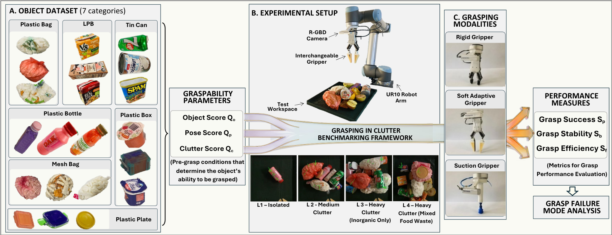

Experimental Protocol
The GRAB benchmark evaluates robotic grasping performance across four progressively challenging experimental conditions, ranging from isolated objects to heavily cluttered mixed food waste environments.
1. Experimental Setup

The experimental platform consists of a UR10 robotic arm and an Intel RealSense D415 RGB-D camera, operating within a 40 × 40 cm² workspace. The camera is positioned 52.5 cm perpendicular to the workspace, aligning the experimental area with the workspace mask used by the 6D grasp pose detection models.
Four experimental clutter levels (L1–L4) were designed to systematically evaluate grasping performance under increasing environmental complexity. All experiments were conducted using three grasping modalities: rigid parallel-jaw, Fin-Ray soft adaptive, and suction grippers.
2. Level 1 — Single Isolated Object
The baseline experiment evaluates grasping performance with a single isolated object in the workspace. Each of the 21 objects was randomly positioned at five predefined locations: the four corners and the centre of the workspace.
Each object was tested at all five positions, resulting in 105 grasp attempts per gripper and 315 trials across the three grasping modalities.
Initial experiments revealed that suction grasping was unsuccessful for plastic bags and mesh bags due to difficulties maintaining an effective suction seal. Consequently, these two categories were excluded from suction-based evaluations in subsequent cluttered experiments.
3. Level 2 — Medium-Clutter Scene
The second experiment introduces multiple objects simultaneously to evaluate grasping performance under moderate clutter.
The 21-object dataset was divided into three clusters of seven objects, each containing one representative from every contaminant category. For suction grasping, five objects were used per cluster.
Objects were randomly dropped into the workspace from a storage box to generate varied clutter configurations. During each grasping cycle, the highest-ranked feasible grasp was selected from the top eight candidate poses generated by AnyGrasp or SuctionNet after post-processing.
Each cluster was evaluated over five repetitions, resulting in 105 trials for each parallel-jaw gripper and 75 trials for the suction gripper, giving 285 trials in total.
4. Level 3 — Heavy-Clutter Scene
The third experiment evaluates grasping performance under heavy clutter by introducing 14 inorganic objects per scene, representing the maximum practical object density within the experimental workspace and camera depth constraints.
Clusters from Level 2 were combined in pairs to form three groups, each containing two objects from every contaminant category. For suction grasping, the scene contained 10 objects, excluding plastic bags and mesh bags.
Objects were randomly dropped into the workspace, and consecutive grasping attempts were performed using the same grasp-selection procedure as Level 2. Each group was repeated five times.
This produced 210 trials for each parallel-jaw gripper and 150 trials for the suction gripper, resulting in 570 trials overall.
5. Level 4 — Mixed Food Waste Scene
The final experiment introduces a more realistic food waste sorting environment by combining seven inorganic contaminants with seven organic food waste items in a wet, heterogeneous scene.
This configuration introduces additional manipulation challenges, including object occlusion, surface adhesion, variable textures, thin liquid layers, and entanglement between objects.
Following the Level 3 procedure, objects were randomly dropped into the workspace and consecutive grasping cycles were performed. The previously established suction-gripper category exclusions were maintained.
A total of 570 grasping trials were conducted across the three grasping modalities to evaluate performance in mixed food waste conditions.
6. Evaluation and Data Collection
For every grasp attempt, regardless of success or failure, six evaluation metrics were recorded. These include three pre-grasp graspability parameters and three grasp performance measures.
The graspability parameters comprise Object Deformability Score (QO), Pose Score (QP), and Clutter Score (QC). Grasp performance was evaluated using Success (SP), Stability (SB), and Efficiency (SF).
Together, these measurements support systematic comparison of grasping modalities and analysis of the factors influencing grasp performance across increasingly complex environments.